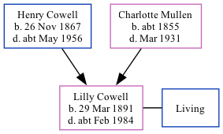

Lilly Clara Mace (née Cowell) 1891 - c1984
[ Home ] | [ Calendar ] | [ Surnames Index ] | [ Family History ]A daily cook and the daughter of Henry Cowell (a shepherd) and Charlotte Mullen, Lilly Cowell, the second cousin twice-removed on the mother's side of Nigel Horne, was born in East Malling, Kent, England on Mar 29, 18911,2,3,4,5 and baptized there at St James the Great Church, 2 The Grange on May 17, 1891. She married Pharoah Mace in Malling, Kent, England around Aug 19246.
Throughout her life, Lilly lived in several places: on Lunsford Lane in East Malling on Apr 5, 18917; in Larkfield, Kent on Mar 31, 19018; on 100 Elmbourne Road, Wandsworth, London, England on Apr 2, 19119; and at Church Walk in East Malling on Sep 29, 19392.
She died c. Feb 1984 in Maidstone, Kent3.
Parents
- Henry John was born on Nov 26, 1867
- Charlotte was born c. 1855
Citations
- 1891 England Census Online publication - Provo, UT, USA: The Generations Network, Inc., 2005.Original data - Census Returns of England and Wales, 1891. Kew, Surrey, England: The National Archives of the UK (TNA): Public Record Office (PRO), 1891. Data imaged from The National
- 1939 Register - Findmypast (was recorded at this address)
- England & Wales deaths 1837-2007 - Findmypast
- England Births & Baptisms 1538-1975 - Findmypast
- Kent Baptisms - Findmypast
- England & Wales Marriages 1837-2005 - Findmypast
- 1891 England, Wales & Scotland Census - Findmypast (was age 0 and the daughter of the head of the household)
- 1901 England, Wales & Scotland Census - Findmypast (was age 10 and the daughter of the head of the household)
- 1911 Census for England & Wales - Findmypast (was age 20 and a servant in the household)
Media
1891 England, Wales & Scotland Census - GBC/1891/0005472922
England & Wales marriages 1837-2008 - BMD/M/1924/3/AZ/000272/090
England & Wales deaths 1837-2007 - BMD/D/1984/1/74471726
England Births & Baptisms 1538-1975 - R_885449678
Kent Baptisms - GBPRS/B/82130172/1
England & Wales births 1837-2006 - BMD/B/1891/2/AZ/000135/349
England Births & Baptisms 1538-1975 - R_938206371
1901 England, Wales & Scotland Census - GBC-1901-0006113675
1911 Census For England & Wales - GBC-1911-RG14-02292-0317-7
1939 Register Transcription - TNA-R39-1831-1831B-024-27
Kent Baptisms - PRS/KENT/BAP/0378672
Family Tree
Generated by Ged2Site. Last updated on Jul 20, 2025